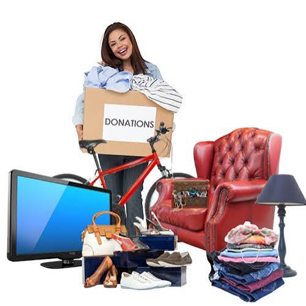
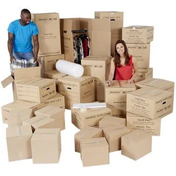

Gen
eral
"Bring It or Leave It"
Guide for Your UK PCS

What to Leave Behind (or Put in Non-Temporary Storage)
● Major Household Appliances: Leave your American
refrigerator, washer, dryer, and microwave at home. Base housing includes these, and if you live "on the economy" (off-base), the Base Housing Office or
Self-Help will loan them to you for free. Plus, American laundry hookups do not match UK standards. ● Single-Voltage Countertop Appliances: If it heats up
and is strictly 110V (like your favorite toaster, slow cooker, or non-dual-voltage coffee maker), leave it. Running high-wattage heating appliances on heavy, buzzing step-down transformers is a fire hazard and degrades the lifespan of your machine. Buy cheap 220V replacements at the base thrift shop or local stores when you land. ● King-Sized or Massive Oversized Furniture: British
stairways are narrow, doorways are tight, and master bedrooms are significantly smaller than their US counterparts. That massive, three-piece sectional or heavy California King bedroom set might literally not fit through the front door of your charming new rental. ● Firearms, Weapons, and Replicas: UK weapon laws are
exceptionally strict. The DoD Personal Property Consignment Guide strongly recommends leaving all firearms behind. This restriction includes hunting rifles, BB guns, airsoft guns, ammunition, and even decorative display swords/knives. Trying to import these in your household goods is a criminal offense under British law.

What to Bring (Pack it Up!)
● Dual-Voltage Electronics: Check the power brick on
your laptops, tablets, phones, and modern gaming consoles (like the PS5 or Xbox). If the label reads 100-240V, 50-60Hz, it is dual-voltage. Bring them! All you will need is a simple, cheap Type-G plug adapter to fit the UK wall outlets. ● Every Piece of Storage and Organization You Own:
Built-in closets (called "wardrobes" over here) are rare in British homes. Bring your dressers, shelving units, plastic bins, shoe racks, and hanging organizers. You will desperately need them to create storage space where none exists. ● Quality Outdoor Gear: The British weather forecast is
famously unpredictable. Bring high-quality waterproof jackets, sturdy walking boots, and layers. You will do a lot of walking here, rain or shine!
● Hand-Carried "No-Pack" Essentials: Never let the
movers pack your absolute lifelines. Hand-carry a dedicated moving binder with your official orders, tourist and no-fee passports, medical/pet records, vehicle shipping documents, and a few weeks' worth of vital medications.
Shopping, APO, and Deliveries: How to Get Your Stuff
One of the most common questions families ask is: "When will my stuff actually get here?" Once your main Household Goods
(HHG) shipment leaves your curb in the U.S., it generally takes
anywhere from 6 to 10 weeks to arrive at your new doorstep
in the UK. Because it travels via ocean cargo freight, factors
like port congestion, customs clearance, and seasonal PCS
rushes can sway that timeline.
Don't panic if you realize you forgot something or can't fit your life into British-sized rooms. You have plenty of solid shopping options once you land:
● The APO Lifeline: Keep in mind that you will get a base
APO address, meaning you can still order your favorite products directly from the US. Big-name retailers like Walmart, Home Depot, and Ulta all deliver to APO addresses. The only catch is that it takes some time to cross the Atlantic, so plan ahead for things you need! ● UK Amazon is Your Best Friend: For your day-to-day
essentials, domestic shipping is incredibly convenient. Setting up a British Amazon account (or switching your region) is a total game-changer. It is highly efficient for stocking up on everyday household goods, 220V small electronics, and quick home solutions with incredibly fast local delivery. ● On-Base Shopping: We do have a Base Exchange (BX),
but the selection is quite limited compared to major U.S. bases. We also have a Commissary that functions just like a standard U.S. grocery store with most of your everyday items. If there is something specific you miss from home, they do accept requests for specific items, though availability isn't always guaranteed.
Keep the original guide.
Download the PDF version exported directly from the Google Doc.